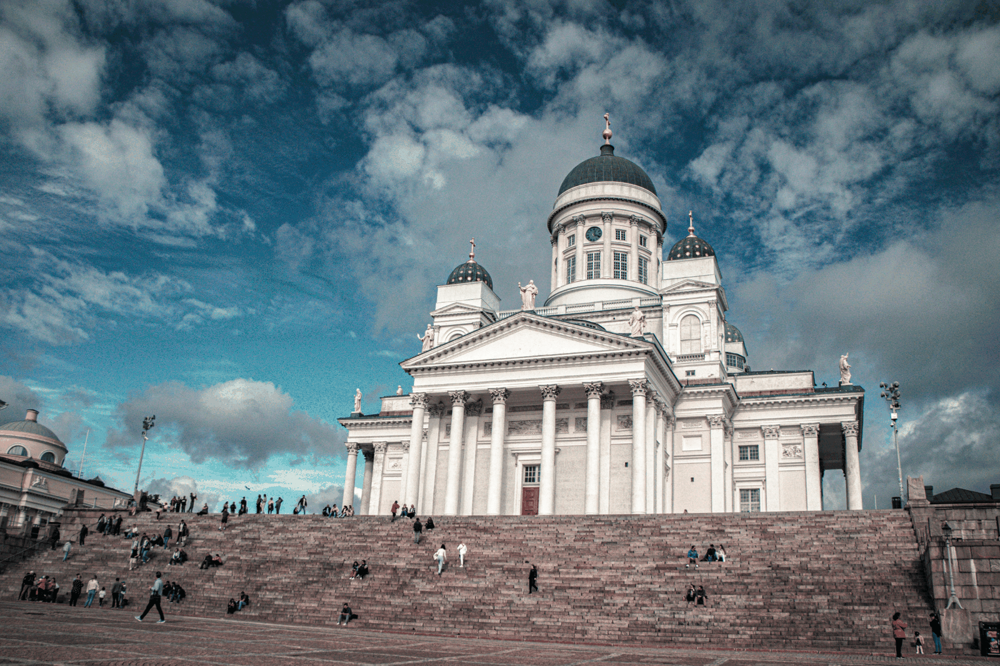
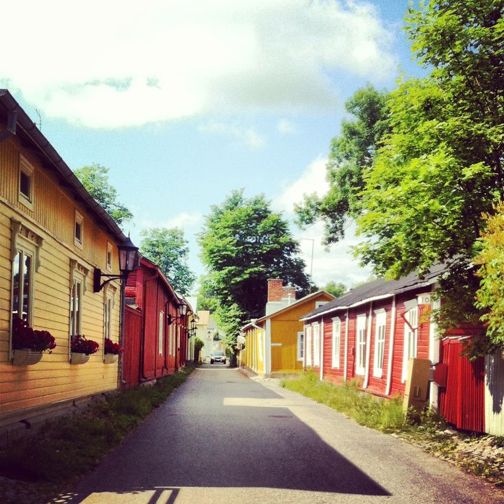
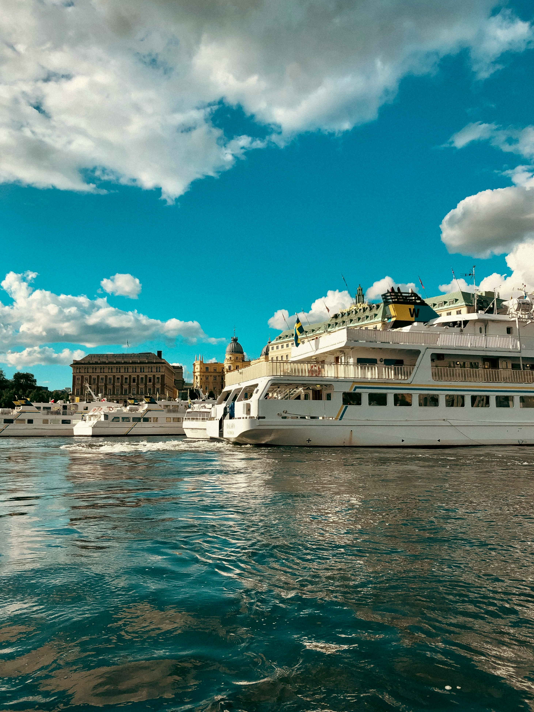
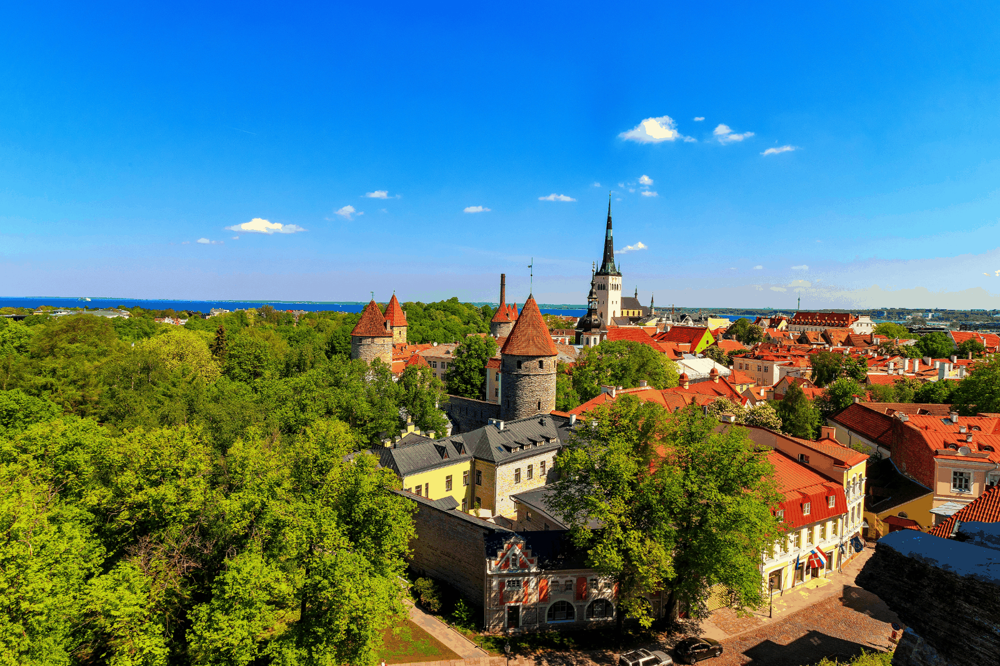
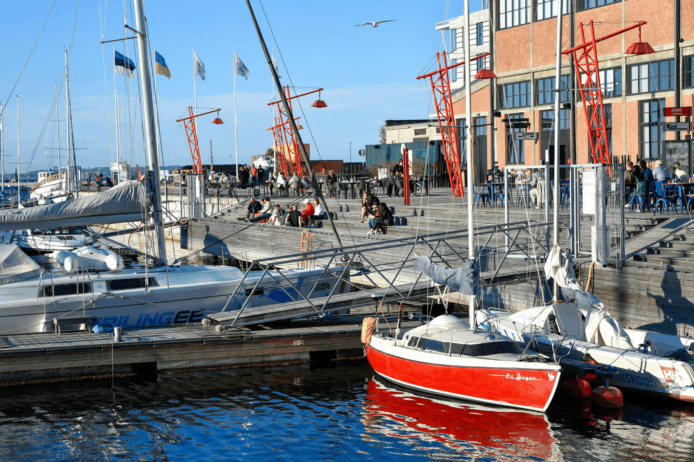
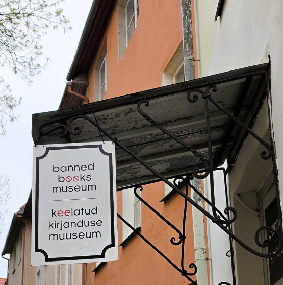
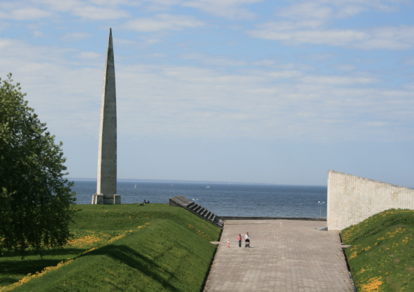

Puu-Vallila
Casette in legno, cortili e un'atmosfera quasi da piccolo paese nel cuore di Helsinki.
Cinque giorni tra design nordico, quartieri in legno, città medievali e tracce del passato sovietico. Con il mare, letteralmente, nel mezzo.
Helsinki e Tallinn sono abbastanza vicine da stare nello stesso viaggio, ma abbastanza diverse da sembrare due mondi. L'idea è attraversarle con calma, lasciando spazio ai luoghi simbolo e a qualche deviazione meno ovvia.

La prima Helsinki è luminosa e monumentale: piazze neoclassiche, cupole, mercati sul porto e il profilo delle isole appena oltre la costa.
Tra le tappe che meritano spazio c'è anche Suomenlinna, la fortezza sul mare che permette di cambiare prospettiva senza lasciare davvero la città.

Basta allontanarsi dalle cartoline più note per incontrare una città diversa: vecchie aree produttive, quartieri residenziali e case in legno.
Puu-Vallila è uno di quei posti che fanno dimenticare per un momento di trovarsi in una capitale nordica.
Qui il trasferimento non è tempo perso: diventa parte del viaggio. Helsinki e Tallinn sono collegate via mare e la traversata permette di passare da una capitale all'altra in circa due ore.
Si lascia alle spalle la Finlandia guardando il porto dal traghetto e si arriva in Estonia pronti a cambiare completamente scenario.


Torri, mura e tetti rossi sono inevitabilmente il primo incontro con Tallinn. La città vecchia merita di essere attraversata senza fretta, ma il viaggio non si ferma dentro le mura.
Quartieri come Kalamaja iniziano a mostrare un'altra Tallinn: più quotidiana, creativa e legata alla sua storia operaia.

Vecchi spazi produttivi e cantieri navali hanno lasciato tracce che oggi convivono con nuovi quartieri e waterfront affacciati sul Baltico.
Noblessner racconta bene questa trasformazione. E andando ancora oltre, Tallinn cambia di nuovo: memoria del Novecento, grandi spazi e costa verso Pirita.
Non è un itinerario costruito per collezionare due città. Il mare, i quartieri fuori dal centro e i contrasti tra passato e presente sono parte del percorso quanto i monumenti più famosi.
Non tutto quello che vale la pena vedere finisce nelle prime pagine delle guide.
Casette in legno, cortili e un'atmosfera quasi da piccolo paese nel cuore di Helsinki.

Un piccolo museo dedicato ai libri censurati e vietati in diverse parti del mondo, nascosto nella Tallinn storica.

Un luogo dove la memoria del periodo sovietico e la storia più recente dell'Estonia convivono a pochi passi dal Baltico.
Possiamo costruire il viaggio sui tuoi giorni, scegliendo quanto spazio lasciare ai classici e quanto alle deviazioni Fuori Mappa.
Costruiamo il tuo viaggio ✦